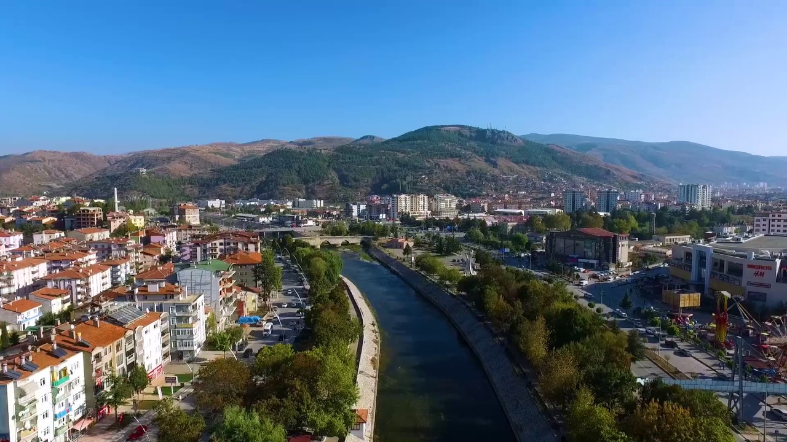

Tokat,uygarlýklarýn merkezi olan Anadolu' da, zengin doðal kaynaklarý, jeostratejik konumu nedeni ile, beyliklerin, devletlerin ve imparatorluklarýn yaþama ve fetih alaný olmuþtur. Orta karadeniz daðlarýndan güneye, Anadolu'nun içlerine doðru, deðiþik rakýmlarda dizi dizi yaylalar, ovalar, bað ve bahçeler içindeki akarsularýyla, Dünyada benzeri az olan bu cennet Ýlimiz, canlý ve zengin tarihinin izlerini bugün de yaþatmaktadýr. Tokat Merkez olmak üzere, Zile'den Reþadiye'ye, Erbaa ve Niksar'dan Artova'ya kadar, ilçe ve köylere yayýlmýþ sayýsýz tarihi varlýklarýmýzýn pek çoðu, 5000 yýldan bu yana istilalar, savaþlar, depremler ve tahribatlarla yok olmuþ veya yýkýlmýþlardýr. Yer altýnda kalanlar gün ýþýðýna çýkarýlmayý beklerken, günümüze kadar oluþan pek çok anýt eser de yeterince korunamamaktadýr. Büyük Atatürk'ün "Misak-ý Milli" diyerek, sýnýrlarýný çizdiði engin tarihi deðerlerini araþtýrmak, ortaya çýkarmak, korumak, yeni kuþaklara ve tüm dünyaya tanýtmak, kültürümüzün, yurt sevgimizin bugünü ve geleceði için milli görevimizdir. Büyük Hitit Ýmparatorluðu batýdan gelen Balkan kavimleri önünde daðýlýp güney doðuya göçerken, Balkan asýllý Frig kavimleri, 500 yýl sürecek uygarlýklarýný Anadoluda kurmaya baþlarlar. Sonralarý. doðudan güçlü Pers, batýdan Büyük Ýskender istilasý Anadoluyu baþtan sona aþar. M.Ö. 4. yüzyýla geldiðimizde, bölgenin eski halký hatti'ler, Hitit'ler, Hurri'ler Mitanni'ler, Frig'ler zaman içinde yeni kavimlerle kaynaþmýþ, terk ettikleri kentler üzerine, Pers, Helenistik ve Pontus kentleri kurulmaya baþlanmýþtýr. Tokat ilindeki Kelkit, Yeþilýrmak ve Çekerek nehirleri boyunca kurulu Hitit ve Frig yerleþim alanlarý, M.Ö. 2500-400 arasýnda, yüksek düzeyde sanat ve kültür yaþamýna sahip olmuþtur. M.Ö. 6. yüzyýl ortalarýndan, 4. yüzyýlýn sonuna kadar Pers egemenliðine giren Anadolu'da Tokat ve çevresini yöneten güçlü Satraplarý M.Ö. 333 de Büyük Ýskender'in hýzlý ve hýrslý istilasý ile þaþkýna dönen maðrur Pers krallarý teslim olurken, Anadolu'da helenistik çað baþlamaktadýr. 300 yýl süren ve sanat etkinliklerinin zirveye çýktýðý bu dönem daha sonra Roma'ya miras kalacaktýr. M. Ö. 1. yüzyýlda küçük Asya fethine gireþen roma imparatorlarý, batýdan baþlayarak, Anadolu'nun iki önemli yerleþme bölgesi olan, Kayseri Kapadokya'sý ile kuzeyde Tokat'ýn (COMANA) merkezi olduðu Pontika Kapadokya'sýný ele geçirirler. Ancak yörede güçlü bir devlet kuran Pontus krallarý MÝTHRÝDAT' lar Roma'ya þiddetle direnmiþlerdir. M.Ö. 47 de, SEZAR ordularý ile Zileye gelir. 5 aat süren savaþ sonunda Pontus kralý 2. PHARNAKES'i yener. "Geldim, gördüm, yendim." dediði, tarihe mal olan sözcüklede Zile'deki baþarýsýný özetler. Tokat (COMANA), Niksar ( NEOCAESAREA), Sulusaray (SEBASTOPOLÝS), Zile(ZELA) M.S. 5. yüzyýla kadar birer Roma eyalet þehri olmuþlardýr. 4. Yüzyýl sonunda Roma imparatorluðu yýkýlýr. Doðuda devam eden yeni Bizans imparatorluðu, Roma devlet düzenine sahip çýkar. Ancak genç Roma kültür ve sanatýný hiristiyan dini ile yorumlar, kendine özgü, yepyeni bir uygarlýðý tüm Anadoluya yayar. 1000 yýl gibi uzun süren Bizans egemenliði, hristiyanlýðý Anadolu'da himaye etmiþ, kurumlaþtýrmýþtýr. Tokat ve Niksar Pontika Kapadokyasý'nýn piskoposluk merkezleri olmuþtur. 1071 yýlýna geldiðimizde, 600 yýldýr devam eden Bizans gücünün, Selçuk ve Danýþment Türkleri karþýsýnda gerilemeye baþladýðýný görüyoruz. 11. yüzyýldan 14. yüzyýl sonuna kadar geçen 300 yýl, Anadolu'da, birçok devletin kaderini belirleyen, karmaþýk ve amansýz mücadelelerle doludur. Tarihçiler için en bol kaynaðýnda bu devirde yaratýldýðýný görüyoruz. 12. yüzyýlda, Bizans imparatorluðu giderek güçlenen Türk-Ýslam devletleri karþýsýnda çökmeye baþlamýþtýr. Selçuklular doðu ve orta Anadolu'yu, Daniþment'ler merkezi Sivas ve Niksar olan kuzey anadolu'nun iç bölgelerini ele geçirirlerken, kutsal topraklara ulaþmak isteyen Haçlý ordularý, dört bir yandan Anadolu'ya çýkarlar. Bizans, Selçuk, Daniþment, Haçlý çatýþmalarý derken, arkasýndan Moðol akýnlarý silindir gibi gelerek, Anadolu'ya girerler. Yöremiz dost ve düþmanýn karýþtýðý tam bir savaþ ve güç arenasýna döner. Bu arada, Anadolu'da kurulu pek çok küçük hiristiyan krallýk ve beylikleri de büyüklerin ayaklarý altýnda ölüm-kalým mücadelesi vermektedirler. 13. yüzyýl sonuna kadar sürüp giden ve hareketli dönemde, ayný gün el deðiþtiren kentler, yýkýlýp yýkýlmýþ, sabah cami olan yer akþam kilise ertesi sabah tekrar camiye dönüþtürülmüþtür. Ayaklanmalar, kanlý hanedan ve taht kavgalarý, ihanet ve servet çatýþmalarý ile Anadolu'da yer yerinden oynamýþtýr. Bu dönemin en önemli uygarlýðý þüphesiz Selçuk Türklerinin Anadolu'da yarattýðý hamanist kültür, sanat, bayýndýrlýk, mimarlýk ve bilimsel çalýþmalardýr. Tokat yöresinde hemen yüzyüze geldiðimiz, özü güzellik ve sabýr olan bu uygarlýk, mücadelerle geçen 2. yüzyýl gibi kýsa zamanda Anadolu'nun her yanýna yayýlabilmiþtir. 13. Yüzyýl, Acýmasýz Moðol Hanlarý yüzbinlerce Anadolu insanýný kýlýçtan geçirmektedirler. Ýslam-Hiristiyan herkesin can derdine düþtüðü bu yýllarda, yýkýlmaya baþlayan Selçuklu hanedanýný kurtarma çareleri arayan "MUÝNEDDÝN PERVANE'nin Moðollarla anlaþmasý, Tokat'tan devleti 15 yýl akýl almaz entrikalarla yönetmesi, Sultan RÜKNEDDÝN KILIÇARSLAN'ý boðdurup yerine GIYASETTÝN KEYHÜSREV'i geçirmesi, mecalsiz Selçuklu devletinin çöküþü, Ýlhanlý Haný OLCAYTON'un doðu Anadolu'yu iþgali, Ýran Moðollarýnýn, ERTANA beylerinin Tokat ve yöresindeki hakimiyeti, KADI BURHANETTÝN dönemi, dirayetsizlik, huzursuzluk ve isyanlar. En önemlisi devletin güçlü zamanýndan sin hristiyanlar tekrar kent, kale ve köylere dönmektedirler. Ahali sahipsiz, þaþkýn ve korkulu... Burada Evliya Çelebi'den aldýðýmýz ve Tokat ile ilgili HACI BEKTAÞ VELÝ'nin keremati verelim. 12. yüzyýlda Horasandan gelip Söðut'te Ertuðrul ve Osman Bey'e giderken Tokat kalesinin kafirler tarafýndan yeniden zapt olduðunu görür ve sümbüllü denilen baðda oturarak "Ýnþallah yakýnda yýldýrým gibi bir er çýkýp Tokat'ý fetheder" diye kehanette bulunur. Sümbül baðýnda bir halifesini seccade sahibi ederek býrakýr. O zat hala "SÜMBÜLLÜ BABA " adýyla meþhur bir kutup olup orada gömülüdür. Hacý Bektaþ Veli'nin keremati 175 yýl sonra doðru çýkar. 1392 de YILDIRIM BEYAZIT Tokat'ý tüm çevresi ile Osmanlý birliðine dahil eder. Yükselme devrinde Selçuklularýn býraktýðý yerden baþlayan Osmanlýlar Tokat'ý önemli bir ticaret ve kültür merkezi haline getirirler. Günümüzde de kullanýlan pek çok tarihi anýt, üç asýr süren bu yükselme yýllarýnda yapýlmýþtýr. Sayýsýz saray, han, mederese ve zaviyenin yer aldýðý Tokat'ta baþta MOLLA LÜTFÝ, ÝBN-Ý KEMAL, MOLLA HÜSREV gibi alimler olmak üzere pek çok devlet adamý, sanatçý, bilim adamý, tarihçi, bektaþi ve mevlevi alimleri bu çaðlarda yetiþmiþ, Osmanlý Ýmparatorluðunun yükselmesinde ve birliðinde önemli katkýlarý olmuþtur. 17. Yüzyýlýn bitimi ile beraber gerileyen imparatorluk döneminde Tokat olumsuz etkilenmiþ, geliþme ve canlýlýðýný yitirmiþtir. 20. Yüzyýl baþlarýnda Birinci Dünya Savaþýnýn acý günlerini yaþayan Tokat 1920 Sevr anlaþmasý ile parçalanmýþ Anadolu'dan arta kalan Türk bölgesi içinde kalmýþtýr. 1863'te nahiye, 1878'de Mutasarrýflýk. 1920'de müstakil Liva olan Tokat, Cumhuriyet'in ilanýna kadar kendi kabuðuna çekilmiþtir. TBMM hükümeti, 1921'de Rum çetelerine karþý giriþtiði mücadelede büyük ölçüde baþarýlý oldu. Tokat temsilcilerinden Rýfat Bey, 18 Mayýs 1922 günü meclise verdiði önerge ile Dahiliye Vekilinden Pontusçuluk hakkýnda açýklama yapmasýný istedi. Karadeniz'deki Rumlarýn büyük bir kýsmý memleketin baþka bölgelerine gönderilmek sureti ile Pontusçuluk hareketi önemli ölçüde çözüme kavuþtu. Böylece Tokat'ta etnik bütünlük saðlanmýþ oldu.